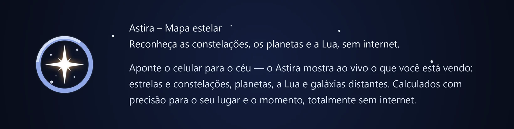
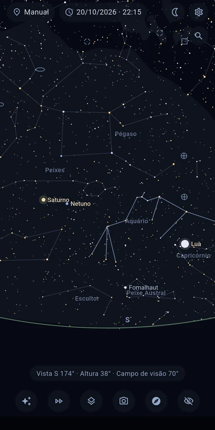
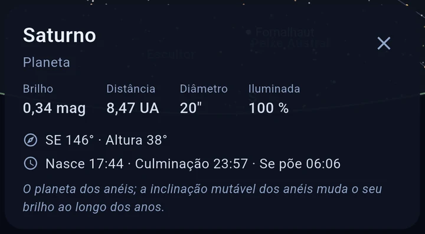
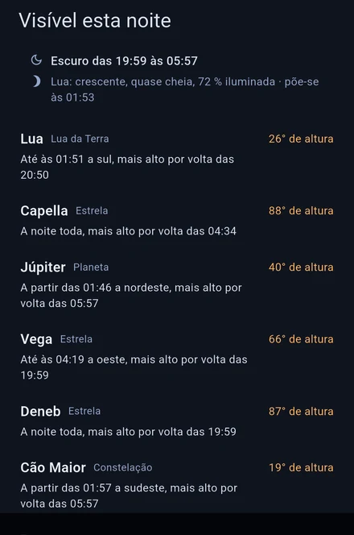
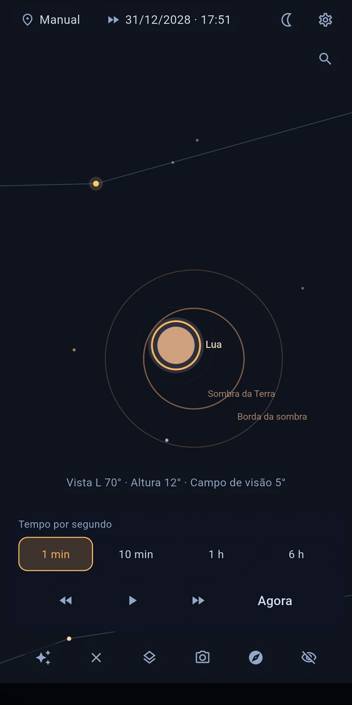

O CÉU ACOMPANHA O SEU MOVIMENTO
No modo ao vivo, o sensor de orientação comanda a vista: mova o aparelho e o mapa acompanha — com suavidade e com correção da declinação magnética da sua localização. Prefere do jeito clássico? Explore o céu arrastando e beliscando para aproximar.

TOQUE E ENTENDA
Toque num objeto para saber mais sem sair da vista: nome próprio e designação de catálogo, distância, brilho, classe espectral e temperatura, e em muitas estrelas brilhantes também raio e massa — além dos horários de nascer, culminação e pôr para o seu lugar.

ENCONTRE O QUE VOCÊ PROCURA
Procure estrelas, planetas, constelações e objetos do céu profundo pelo nome ou número de catálogo — M 31, NGC 224 e Andrômeda levam ao mesmo objeto. Se o alvo estiver fora da tela, uma seta aponta o caminho e a distância angular. E quando você ainda não sabe o que procurar: «Visível hoje à noite» indica os objetos mais interessantes da noite que vem, em palavras claras, com altura e janela de observação. Uma entrada na astronomia sem conhecimento prévio, e no primeiro início um passeio curto mostra como tudo funciona.

O QUE VOCÊ VAI VER
- Cerca de 8.900 estrelas — todas as visíveis a olho nu (até a magnitude 6,5)
- O Sol, a Lua (com a fase) e todos os planetas, com visibilidade e estado do crepúsculo
- Os 109 objetos Messier e mais galáxias, nebulosas e aglomerados brilhantes
- Camadas que dá para ligar e desligar: constelações, Via Láctea, sistema solar, eclíptica, trajetórias orbitais (±30 dias)
- Localização por GPS ou manual, momento livremente ajustável — veja hoje o céu de amanhã
O TEMPO EM CÂMERA RÁPIDA
A câmera rápida mostra as estrelas cruzarem o céu, para a frente e para trás. Assim você vê um objeto se pôr, percorre uma noite inteira ou acompanha a Lua pelas suas fases.
ECLIPSES DO SOL E DA LUA
O Astira calcula quais eclipses dá para ver do seu lugar: quando começam e quanto fica coberto. Um toque e você acompanha o eclipse na câmera rápida.

ALINHAMENTO PRECISO
O mapa está um pouco fora? Isso acontece com toda bússola de celular. Mire numa estrela que você conhece, toque nela, aperte «Alinhar aqui» — pronto. O mapa bate com o seu céu em vez de deixar você adivinhando.
O CÉU SOBRE O QUE ESTÁ AO SEU REDOR
Ligue a imagem da câmera e o mapa celeste se assenta sobre o que está realmente à sua frente: o horizonte, as árvores, os telhados. Em vez de juntar mapa e realidade de cabeça, você aponta o aparelho para onde está procurando. A imagem é apenas exibida: nunca capturada, nunca armazenada, nunca transmitida.
FEITO PARA OBSERVAR
- O modo noturno em vermelho profundo preserva a sua adaptação ao escuro
- A tela fica ligada enquanto você observa
- Estrelas com cores realistas (pelo índice de cor) e tamanho conforme o brilho
- Limite de magnitude ajustável, distâncias em anos-luz ou parsecs
TOTALMENTE OFFLINE — E PRIVADO
O Astira não precisa de internet: todos os cálculos acontecem no seu aparelho. O aplicativo não tem permissão de internet, não mostra publicidade e não contém rastreamento. A sua localização é usada só no aparelho para calcular a vista do céu — perfeito também para locais de observação longe da cidade (e do sinal).
PRECISÃO
O cálculo das posições segue os métodos padrão da literatura astronômica — as posições dos planetas se desviam menos de um minuto de arco da referência do JPL.
FONTES DE DADOS
Catálogo de estrelas: banco de dados HYG (CC BY-SA) · Objetos do céu profundo: OpenNGC (CC BY-SA) · Detalhes na tela de créditos do aplicativo.
Observação: a precisão da bússola de um celular fica tipicamente em ±5–10°. Com a calibração guiada e o alinhamento por estrela você identifica qualquer objeto com segurança mesmo assim.